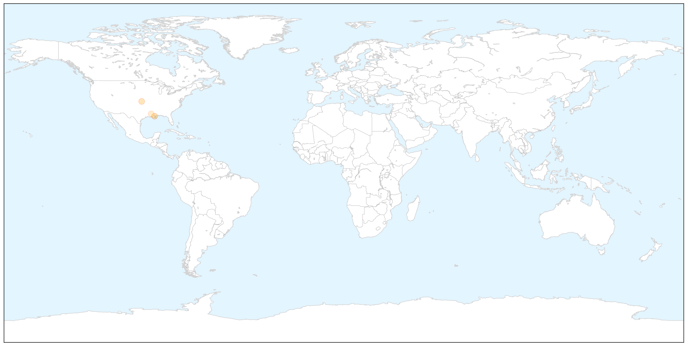

Measles
30-Day Web Trend
3 alerts, 4 warnings

30-Day Twitter Trend
0 alerts, 0 warnings

Article Locations


Article Confidences

Top Articles:
- 0.989
- Vietnam minister calls for calm in face of 8,500 measles cases, 114 fatalities
- 0.985
- Vietnam battles fatal measles outbreak
- 0.977
- Vietnam battles fatal measles outbreak
- 0.976
- Vietnam battles fatal measles outbreak
- 0.976
- Vietnam battles fatal measles outbreak
- 0.975
- Vietnam battles fatal measles outbreak
- 0.970
- Occupying 50% of measles mortality, Vietnam’s capital yet to declare epidemic
- 0.913
- Hanoi takes urgent measures to control measles
- 0.804
- Of 58 measles cases in CA, 19 were intentionally unvaccinated
- 0.722
- Province promotes message of immunization
- 0.702
- Manitoba measles cases up to 7 with 2 new confirmed cases in adults
- 0.544
- Skipping Vaccinations Places Too Many Oklahoma Children at Risk
Top Tweets:
-
No tweets found for Apr 18, 2014
Mold/Fungal
30-Day Web Trend
6 alerts, 0 warnings

30-Day Twitter Trend
0 alerts, 0 warnings

Article Locations

X

Article Confidences

Top Articles:
Top Tweets:
-
No tweets found for Apr 18, 2014